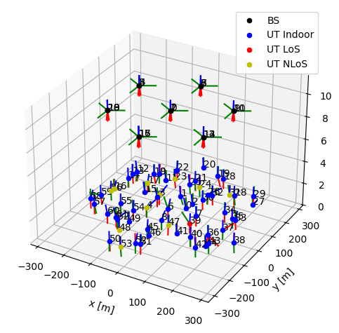

gen_hexgrid_topology#
- sionna.sys.gen_hexgrid_topology(batch_size: int, num_rings: int, num_ut_per_sector: int, scenario: str, min_bs_ut_dist: float | None = None, max_bs_ut_dist: float | None = None, isd: float | None = None, bs_height: float | None = None, min_ut_height: float | None = None, max_ut_height: float | None = None, indoor_probability: float | None = None, min_ut_velocity: float | None = None, max_ut_velocity: float | None = None, downtilt_to_sector_center: bool = True, los: bool | None = None, return_grid: bool = False, precision: Literal['single', 'double'] | None = None, device: str | None = None) Tuple[torch.Tensor, torch.Tensor, torch.Tensor, torch.Tensor, torch.Tensor, torch.Tensor, bool | None, torch.Tensor] | Tuple[torch.Tensor, torch.Tensor, torch.Tensor, torch.Tensor, torch.Tensor, torch.Tensor, bool | None, torch.Tensor, sionna.sys.topology.HexGrid][source]#
Generates a batch of topologies with hexagonal cells placed on a spiral grid, 3 base stations per cell, and user terminals (UT) dropped uniformly at random across the cells.
UT orientation and velocity are drawn uniformly randomly within the specified bounds, whereas the BSs point toward the center of their respective sector.
Parameters provided as None are set to valid values according to the chosen
scenario(see [TR38901]).The returned batch of topologies can be fed into the
set_topology()method of the system level models, i.e.,UMi,UMa, andRMa.- Parameters:
batch_size (int) – Batch size
num_rings (int) – Number of rings in the hexagonal grid
num_ut_per_sector (int) – Number of UTs to sample per sector and per batch
scenario (str) – System level model scenario. One of “uma”, “umi”, “rma”, “uma-calibration”, “umi-calibration”.
min_bs_ut_dist (float | None) – Minimum BS-UT distance [m]
max_bs_ut_dist (float | None) – Maximum BS-UT distance [m]
isd (float | None) – Inter-site distance [m]
bs_height (float | None) – BS elevation [m]
min_ut_height (float | None) – Minimum UT elevation [m]
max_ut_height (float | None) – Maximum UT elevation [m]
indoor_probability (float | None) – Probability of a UT to be indoor
min_ut_velocity (float | None) – Minimum UT velocity [m/s]
max_ut_velocity (float | None) – Maximum UT velocity [m/s]
downtilt_to_sector_center (bool) – If True, the BS is mechanically downtilted and points towards the sector center. Else, no mechanical downtilting is applied.
los (bool | None) – LoS/NLoS states of UTs
return_grid (bool) – Determines whether the
HexGridobject is returnedprecision (Literal['single', 'double'] | None) – Precision used for internal calculations and outputs. If set to None,
precisionis used.device (str | None) – Device for computation. If None,
deviceis used.
- Outputs:
ut_loc – [batch_size, num_ut, 3], torch.float. UT locations.
bs_loc – [batch_size, num_cells*3, 3], torch.float. BS locations.
ut_orientations – [batch_size, num_ut, 3], torch.float. UT orientations [radian].
bs_orientations – [batch_size, num_cells*3, 3], torch.float. BS orientations [radian]. Oriented toward the center of the sector.
ut_velocities – [batch_size, num_ut, 3], torch.float. UT velocities [m/s].
in_state – [batch_size, num_ut], torch.float. Indoor/outdoor state of UTs. True means indoor, False means outdoor.
los – None. LoS/NLoS states of UTs. This is convenient for directly using the function’s output as input to
set_topology(), ensuring that the LoS/NLoS states adhere to the 3GPP specification (Section 7.4.2 of TR 38.901).bs_virtual_loc – [batch_size, num_cells*3, num_ut, 3], torch.float. Virtual, i.e., mirror, BS positions for each UT, computed according to the wraparound principle.
grid –
HexGrid. Hexagonal grid object. Only returned ifreturn_gridis True.
Examples
from sionna.phy.channel.tr38901 import PanelArray, UMi from sionna.sys import gen_hexgrid_topology # Create antenna arrays bs_array = PanelArray(num_rows_per_panel=4, num_cols_per_panel=4, polarization='dual', polarization_type='VH', antenna_pattern='38.901', carrier_frequency=3.5e9) ut_array = PanelArray(num_rows_per_panel=1, num_cols_per_panel=1, polarization='single', polarization_type='V', antenna_pattern='omni', carrier_frequency=3.5e9) # Create channel model channel_model = UMi(carrier_frequency=3.5e9, o2i_model='low', ut_array=ut_array, bs_array=bs_array, direction='uplink') # Generate the topology topology = gen_hexgrid_topology(batch_size=100, num_rings=1, num_ut_per_sector=3, scenario='umi') # Set the topology channel_model.set_topology(*topology) channel_model.show_topology()
